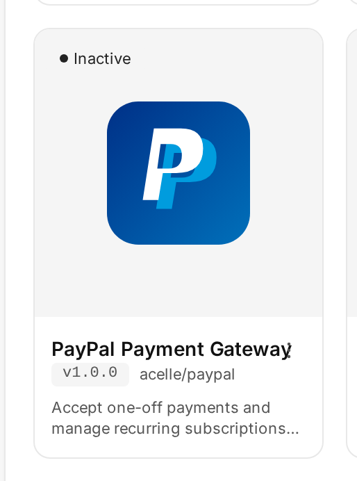
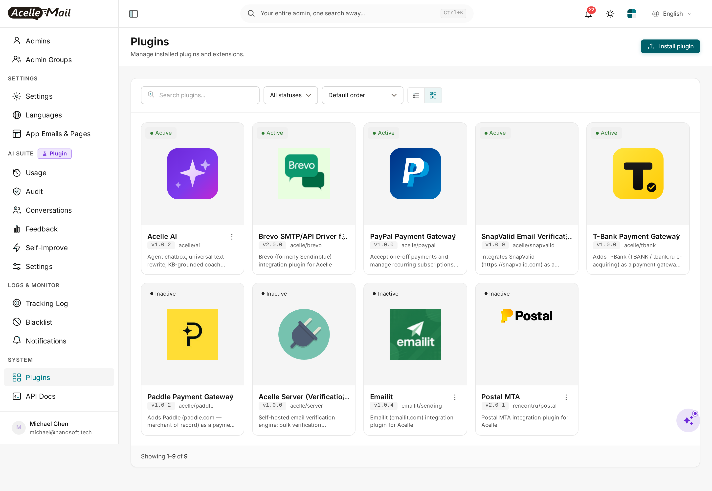
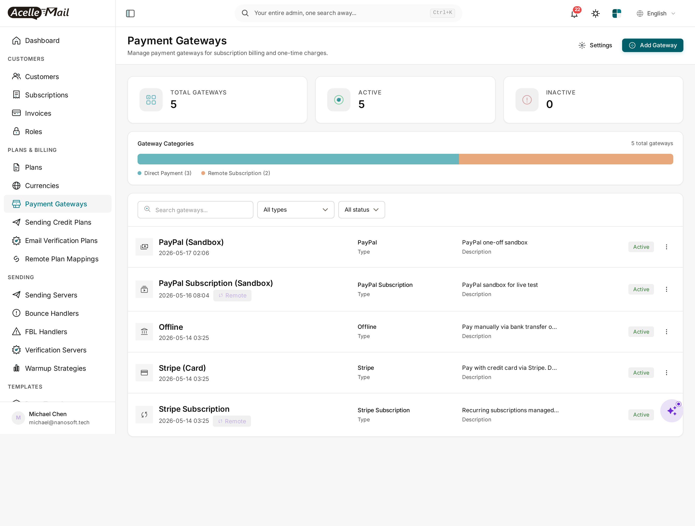
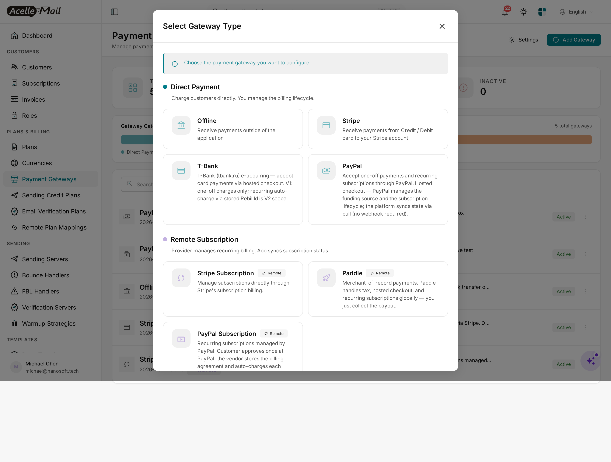
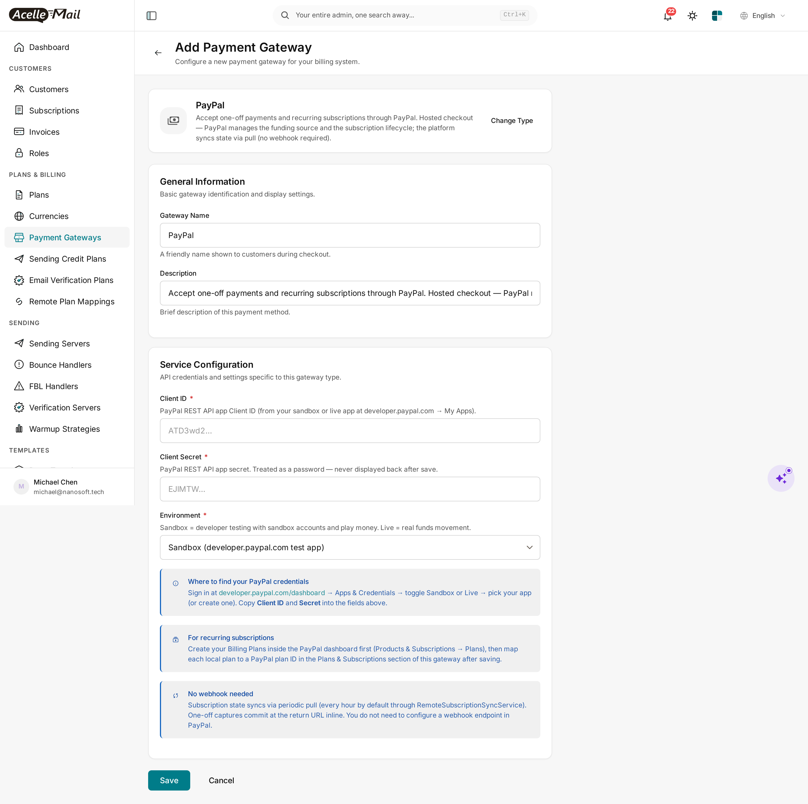

PayPal for Acelle Mail — User Guide
A drop-in plugin that adds PayPal (paypal.com) to Acelle as a single gateway that handles both:
- One-off charges via PayPal Orders v2 — the buyer pays once with their PayPal account OR as a guest with a debit/credit card (no PayPal account required).
- Provider-managed subscriptions via PayPal Subscriptions v1 — the buyer approves once, then PayPal auto-charges each cycle against a PayPal Billing Plan you map your local plan to.
Which mode runs is decided automatically per checkout: a one-time invoice → one-off charge; a subscription plan → a PayPal subscription.
Pull-only completion. No webhook endpoint to expose. The platform confirms each payment / subscription on the buyer's return from PayPal (with a background poll as backup) — no HMAC verification, no public callback URL.
Table of Contents
- Requirements
- Install the plugin
- Enable the plugin
- Add PayPal as a payment gateway
- Configure Client ID + Secret + Environment
- Map local plans to PayPal Billing Plans (subscriptions)
- How customers pay
- Subscription state sync
- Sandbox testing
- Troubleshooting
- Uninstall
1. Requirements
| Minimum | |
|---|---|
| Acelle Mail | 4.0.24 or newer |
| PHP | 8.1+ (matches Acelle's own minimum) |
| PayPal account | A PayPal Business account at paypal.com (free signup). A free Sandbox is included for testing. |
| REST API app | Create one at developer.paypal.com/dashboard → Apps & Credentials. It produces a Client ID + Secret — the only two credentials this plugin needs. |
| PayPal Billing Plans | For subscriptions only — a Product + Billing Plan per local plan you sell recurring (see §6). One-off charges need none. |
| Outbound HTTPS | Server must reach api-m.sandbox.paypal.com (sandbox) and api-m.paypal.com (live) on port 443 |
| Inbound HTTPS | Your Acelle install must be reachable so buyers can be redirected back from PayPal (/cashier/paypal/return/{intent_uid}) |
You do not need a public webhook endpoint or IPN — completion is pull-based.
2. Install the plugin
Standard Acelle plugin install — admin → Plugins → upload ZIP.
- Download the plugin ZIP from your account's Plugins page (
acelle-paypal-v1.2.x.zip). - In the admin sidebar, open System → Plugins.
- Click Install plugin, drop in the ZIP, and click Upload & install.
After install, PayPal Payment Gateway appears as Inactive:
3. Enable the plugin
- In the Plugins list, find the PayPal Payment Gateway card.
- Click the ⋮ menu and pick Enable.

The card flips to Active and the PayPal gateway becomes available in the gateway picker:

Disable removes PayPal from the picker but keeps existing
payment_gatewaysrows of typepaypal. Delete rolls back migrations and removes files — see §11.
4. Add PayPal as a payment gateway
- In the admin sidebar, open Plans & Billing → Payment Gateways.
- Click + Add Gateway.

- Pick PayPal from the picker:

PayPal is a single gateway that serves both one-off and subscription plans — you do not register two separate gateways. Because it can host provider-managed subscriptions, it is grouped with the Remote Subscription gateways (same as Stripe), but it still charges one-off invoices too.
5. Configure Client ID + Secret + Environment

| Field | Value |
|---|---|
| Gateway Name | What customers see at checkout (e.g. Pay with PayPal) |
| Description | Free-form. Optional. |
| Client ID | The ATD3wd2… Client ID from your PayPal REST app. |
| Client Secret | The EJlMTW… Secret from the same app. Treated as a password. |
| Environment | Sandbox (test) or Live (real funds). |
Client ID and Secret are environment-bound. A Sandbox key will not authenticate against Live and vice versa. If PayPal returns
Authentication failedafter save, check the Sandbox/Live toggle matches the dropdown.
No webhook URL to register. Once saved you're done — completion is pull-based.
6. Map local plans to PayPal Billing Plans (subscriptions)
This section applies only if you sell recurring plans through PayPal. One-off charges need no mapping — they bill the invoice amount directly.
For a subscription, PayPal is the merchant of record for the recurring billing, so the plan must exist at PayPal as a Billing Plan (P-…):
- Create the PayPal Billing Plan. At paypal.com → Pay & Get Paid → Subscriptions → Plans → Create plan (or via the API): pick/create a Product, set the billing cycle (e.g. monthly USD 10.00), save. PayPal assigns an id like
P-5ML4271244454362WXNWU5NQ. - Map it in Acelle. Open your PayPal gateway → Plans & Subscriptions → Remote Plan Mapping. For each local plan you offer recurring through PayPal, pick the matching
P-…plan (the dropdown is fetched live from PayPal). Save.
When a customer subscribes to that local plan via PayPal, the plugin starts a PayPal subscription against the mapped P-… and PayPal handles the recurring billing thereafter.
Unmapped local plan + customer subscribes: the checkout fails loud (
requires a mapped PayPal Billing Plan id). Map every local plan you offer recurring through PayPal before enabling it.
7. How customers pay
One-off (a one-time invoice)
GET /cashier/paypal/checkout/{intent_uid}?return_url=…
- The plugin creates a PayPal Order (
POST /v2/checkout/orders) and 302-redirects the buyer to PayPal's approve page. - The buyer approves (PayPal account or guest card) and returns.
- The plugin captures the order (
/capture) inline — money lands in your balance, thePaymentIntentflips toSUCCEEDED, the plan term starts.
Subscription (a recurring plan)
GET /cashier/paypal/checkout/{intent_uid}?return_url=… (same route — mode chosen by the plan)
- The plugin creates a PayPal Subscription (
POST /v1/billing/subscriptions) against the mappedP-…plan and 302-redirects the buyer to PayPal's approve page. - The buyer approves (a PayPal account is required — recurring billing needs a stored agreement).
- On return, the platform polls the subscription until it is ACTIVE, then activates the local subscription. Subsequent renewals are charged by PayPal and picked up by the periodic sync (§8).
If the buyer cancels at PayPal's approve page they return with ?cancel=1 and the intent is marked failed — the payment page shows the reason.
8. Subscription state sync
For a subscription, PayPal owns the lifecycle (renewals, cancellations, failures). Acelle pulls state on demand:
| Trigger | When | What it does |
|---|---|---|
| Per-page lazy fetch | Admin/customer opens a subscription page | GET /v1/billing/subscriptions/{id} → latest status, next-bill date, card |
| Periodic sync job | Hourly (Acelle scheduler) | Walks each local subscription by id and refreshes its state + billing history |
| Manual "Refresh" | Admin clicks Refresh | Forces a fresh fetch |
PayPal has no "list all subscriptions" API, so the admin browse-all-remote-subscriptions overview is empty for PayPal — but every per-subscription sync works (the platform reconciles by id, not by enumerating). Cancelling a PayPal subscription is immediate (PayPal has no cancel-at-period-end), and there is no proration preview (a plan change quotes the new plan's price, then PayPal prorates on its side).
The one-off lane needs no sync — each capture completes inline at the return URL.
9. Sandbox testing
- Go to developer.paypal.com/dashboard → Sandbox → Accounts. Note the personal account's email — that's the buyer you'll use.
- In your Acelle PayPal gateway, choose Environment = Sandbox and the Sandbox Client ID / Secret.
- For subscription testing, create at least one Sandbox Product + Billing Plan and map it to a local plan (§6).
- At checkout, sign in with the personal sandbox account and approve.
Sandbox occasionally returns
INTERNAL_SERVICE_ERRORon the first request after idle — retry once.
10. Troubleshooting
| Symptom | Likely cause | Fix |
|---|---|---|
| "Authentication failed" on save | Environment ↔ Client ID mismatch | Sandbox creds + Sandbox dropdown; Live creds + Live dropdown |
requires a mapped PayPal Billing Plan id at checkout |
Local plan not mapped to a P-… plan |
Map it (see §6) |
| Buyer lands on a PayPal error page | Currency unsupported / amount below minimum, or the Billing Plan is not ACTIVE |
Check the plan is active + the currency is supported |
| Subscription stays "Pending" after approve | Buyer closed the tab before returning, or the sync cron isn't running | Run php artisan schedule:run; the sub becomes active on the next poll |
cURL error 28: timed out |
Firewall blocks PayPal API hosts | Open port 443 to api-m.paypal.com + api-m.sandbox.paypal.com |
| PayPal missing from the gateway picker after enable | Stale opcache / view cache | php artisan optimize:clear |
The plugin logs its HTTP calls to storage/logs/laravel.log with the full PayPal response body on failure.
11. Uninstall
- Open System → Plugins, find PayPal Payment Gateway, click ⋮ → Disable. PayPal disappears from the picker; existing
payment_gatewaysrows of typepaypalare kept. - ⋮ → Delete also rolls back migrations and removes the on-disk folder.
The core Acelle install is left as it was. The PayPal app in your developer dashboard is unaffected.
Support
- Documentation: this guide + the comment header at the top of every plugin source file
- Questions & issues: contact support@acellemail.com
For PayPal account, payout, or app-credential questions, contact PayPal merchant support — out of scope for this plugin.